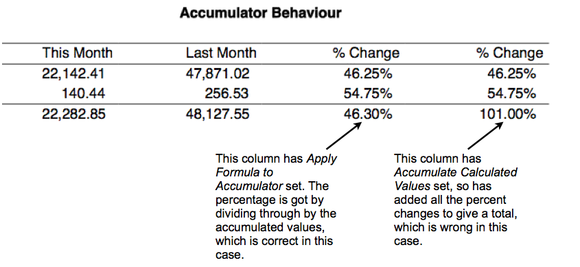

MoneyWorks Manual
Report Column Types
The type of column is chosen from the Column Type pop-up menu. This determines what will print in that column for any part involving accounts or accumulators. There are six possible types to choose from
Account Code: Prints the code for each account or range of accounts in the part.
Description: The text description for the account code.
Accountant’s Code: The value in the Accountant’s Code field for the account.
Actual: An actual (as opposed to budget) value from the general ledger.

The information extracted for the report depends upon the value of the For pop-up menu. These are detailed in the following table where report period refers to the accounting period for which the report is being printed (this is selected when the report is printed). The financial year for which the information is extracted is determined by the right hand pop-up menu.
| This Year | Last Year | |
|---|---|---|
| Movement This Period | The movement for the account in the report period. This is the difference between the current (or closing) balance for the period and the opening balance for the period. | The movement for the account in the period one financial year prior to the report period. For example, if the report is being printed for July 2000/01, this gives the movement for July 1999/00. |
| Movement Last Period | The movement for the period prior to the report period. For example, if the report is being printed for July 2000/01, this gives the movement for June 2000/01. | The movement for the period one year and one period prior to the report period. For example, if the report is being printed for July 2000/01, this gives the movement for June 1999/00. |
| Movement Year to Date | The movement for the account from the beginning of the year to the end of the report period. This is the difference between the current (closing) balance for the period and the opening balance for the financial year. | The movement for the account from the beginning of last year to the end of the period one year prior to the report period. |
| Movement Annual | The movement for the account for the entire year. For example, if the report is being printed for April, but the current period is July, this gives the account movement from the beginning of the year to the end of July. | The movement for the account for last year. For Income and Expense accounts, this is the closing balance of the account for the previous year (since they always have an opening balance of 0.0) |
| Balance To this Period | The closing balance of the account for the report period. | The closing balance of the account for the period one financial year prior to the report period. |
| Movement Period X | The movement for the account in the designated period (selected from the pop-up menu) for the current year. The period will not change regardless of the report period. If the period is not open and the Budgets Report Preference option is set, the A budget will be printed. | The movement for the account in the designated period (selected from the pop-up menu) for the previous year. The period will not change regardless of the period. |
| Movement This Period ±N | The movement for the account in a period relative to the report period. The number of periods preceding or following is entered. Negative values are for prior periods, and positive for subsequent periods. For example, -3 represents 3 periods prior, and 1 represents the following period. If the period has not been opened and the Budgets Report Preference option is set, the A budget will be printed. | As for this year, except relative to the period last year. |
| Balance to Period X | The balance for the account in the designated period (selected from the pop-up menu) for the current year. The period will not change regardless of the periods setting when the report is printed. | The balance for the account in the designated period (selected from the pop-up menu) for the previous year. The period will not change regardless of the periods setting when the report is printed. |
| Movement This Period ±N | The balance for the account in a period relative to the report period. The number of periods preceding or following is entered. Negative values are for prior periods, and positive for subsequent periods | As for this year, except relative to the period last year. |
Future Values Using the Movement Period X and Movement This Period ±N options, it is possible to refer to general ledger movements that do not yet exist because the period is not yet open. These will print as zero unless a Budget option has been set in the Report Prefs, in which case figures from the A or B budgets (as specified) will be used instead.
Signs
Use the Signs pop-up menu to control the way that account information is printed. For Profit and Loss type reports the signs should normally be set to Adjusted; for Balance Sheet type reports, they should be set to Normal.

Reversed: Debit balances will be printed as negative; credit balances as positive.
Normal:
Debit balances will be printed as positive; credit balances as negative.
Adjusted: Debit balances in accounts of type Income, Shareholders Funds, Current Liability and Term Liability will be printed as negative, credits as positive. For other account types they are treated as normal. You will need to use Adjusted in a Profit and Loss report. Otherwise the income account balances will be displayed as negative values (because they will normally be credits).
Budgets
By default, this is the account A budget for the period for the report period. The Budget to use (A Budget or B Budget) is selected from the A/B pop-up menu. Budgets can be printed for the current year, the previous year, or the next year.

| This Year | Last Year | |
|---|---|---|
| Movement This Period | The budget for the account in the report period. | The budget for the account in the period one financial year before/after the report period. |
| Movement Last Period | The budget for the period prior to the report one. | The budget for the period one year before/after the previous report period. |
| Movement Year to Date | The budget for the account for all periods from the beginning of the year to the end of the report period. | The budget for the account for all periods from the beginning of last/next year to the end of the period one year before/after the report period. |
| Movement Annual | The annual budget for the account for the entire year. This is the sum of all of the period budgets for the year | The annual budget for the account for last/next year. |
| Balance To this Period | Not available. | Not available. |
| Movement Period X | The budget for the account in the period designated by the period pop-up menu in the current financial year. | The budget for the account in the period designated by the period pop-up menu in the previous/next financial year. |
| Movement This Period ±N | The budget for the account in the period relative to the report period in the current financial year. | The budget for the account in the period relative to the report period in the previous/next financial year. |
| Balance to Period X | Not available. | Not available. |
Note: If you have only specified annual budgets (by entering the annual budget into the first period of the financial year), then you will (not surprisingly) get this value for the Movement This Period budget value for that period, and zero for all the rest.
Calculation
The calculation option allows you to specify a calculation that may involve other columns or fields. The calculation is specified in the Calculation field, or you can use the Edit button for the full Calculation entry window.
Note: If you open a calculation column that was created in ancient versions of MoneyWorks, you will get the limited calculations options that were then available. This is for backward compatibility only, and will remain unless you use the Edit button.
You can access a particular column of an accumulator and use it as a base for calculating percentages by putting a reference to it of the form:
<Accumulator Name>.<Column Name>
For an example of this, see the right hand column of the Profit Monthly report, which uses the reference PCT.COL6 to show income and expenditure as a percent of total income.
Note: For calculations not returning a number, set the format to Non-numeric.
Note: Since there is no guarantee that an accumulator will exist for the entirety of the report (it’s not created until it is used in a part), the syntax check for a column calculation will give an “unknown identifier” warning when you use an accumulator.column in a column calculation. So long as the accumulator you use in the calculation gets created before any account parts that will cause the column calculation to be evaluated, this won't be a problem - just ignore the warning.
Accum. Behaviour: Determines how the calculation is applied to accumulators.
Apply Formula to Accumulator: The formula is applied to the accumulated totals. You will typically use this option when you are calculating percentage differences across columns.
Accumulate Calculated Values: The result of each calculation is accumulated. This will give the same result as the Apply Formula to Accumulator option provided the calculation involves only addition and subtraction.

Blank
A Blank column displays nothing. Use this for formatting your report. Numeric ell calculations in blank columns are not (by default) accumulated into active accumulators, and nor do accumulator totals show in a Blank column.
General
Similar to Blank columns, but numeric cell calculations are accumulated by default, and accumulator totals are displayed. General is the default column type for new columns.